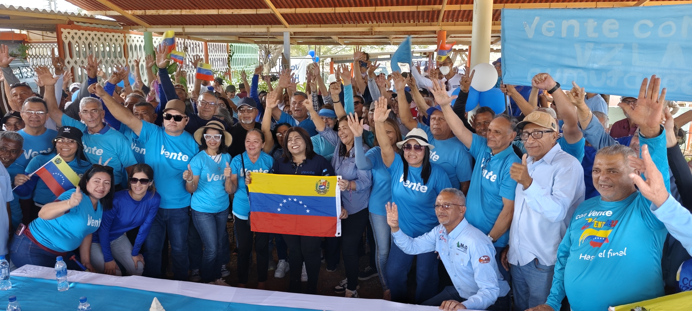

Yanira Leon se reencuentra con estructuras de Vente Los Taques
La coordinadora estadal Yanira León lideró un reencuentro con las estructuras de Vente Los Taques, marcando el reinicio de actividades políticas en el municipio tras las elecciones de 2024.
Leer noticia completa →